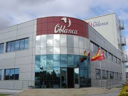

Marcelo Díaz  Inauguramos dos secciones con las que pretendemos profundizar en el conocimiento de algunas personalidades mediante biografías más amplias y estudios extensos sobre sus aportaciones, acompañados de interesantes elementos multimedia (fotos, vídeos, tablas, ilustraciones). En las Monografías reunimos biografías y estudios de figuras claves de la historia, mientras que en los Reportajes incluiremos a los protagonistas de la más reciente actualidad. Esperamos ir ampliando estas nuevas secciones muy pronto.En las Monografías reunimos biografías y estudios de figuras claves de la historia, mientras que en los Reportajes incluiremos a los protagonistas de la más reciente actualidad. Esperamos ir ampliando estas nuevas secciones muy pronto. más reciente actualidad. Esperamos ir ampliando estas nuevas secciones muy pronto.